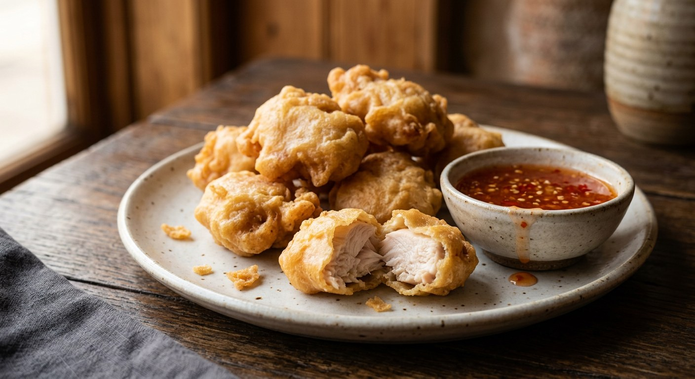

Thai-style battered chicken and prawns — crispy, light tempura-style coating over tender meat or succulent seafood, served with sweet chilli dipping sauce.

ไก่ชุบแป้งทอด / กุ้งชุบแป้งทอด
Light, crispy tempura-style batters coating tender chicken or succulent prawns — a Thai take on battered and fried proteins that emphasises clean flavours and shatteringly crisp textures.
These dishes represent Thai cooks' approach to borrowed techniques — taking the Japanese tempura concept and adapting it with local ingredients and serving styles. The result is lighter and less oily than traditional Western batters, with a coating that puffs and crisps beautifully while staying delicate.
Popular at rice-and-curry shops (ร้านข้าวราดแกง) and as drinking snacks, the appeal lies in the textural contrast: the immediate crack of the crispy shell giving way to moist, well-seasoned meat or the sweet snap of perfectly cooked prawns.
| Thai | English | Amount |
|---|---|---|
| อกไก่ หรือ กุ้งใหญ่ | Chicken breast OR large prawns, prawns: peeled, deveined, tails on | 400g chicken (sliced thin) OR 12 large prawns |
| Thai | English | Amount |
|---|---|---|
| ซีอิ๊วขาว | Light soy sauce | 1/2 tbsp |
| ซอสปรุงรส | Seasoning sauce | 1 tsp |
| น้ำตาลทราย | Sugar | 1/2 tsp |
| พริกไทยป่น | Ground white pepper | 1/2 tsp |
| เกลือ | Salt, for prawns only | 1/3 tsp |
| Thai | English | Amount |
|---|---|---|
| แป้งทอดกรอบ (สำหรับคลุกแห้ง) | Crisp-fry flour (dry coating) | 1/4 cup |
| แป้งทอดกรอบ (สำหรับแป้งเปียก) | Crisp-fry flour (for batter) | 1/2 cup |
| แป้งสาลี | Plain flour, optional, for extra crispiness | 3 tbsp |
| น้ำโซดาเย็นจัด หรือ น้ำเย็นจัด | Ice-cold soda water OR water | 1/2 cup |
| Thai | English | Amount |
|---|---|---|
| น้ำมันพืช | Vegetable oil | for deep frying |
Double-coating is essential. The dry flour coating creates a base for the wet batter to adhere to — without this step, the batter slides off during frying, creating uneven, patchy results. This technique borrowed from Japanese tempura ensures complete, even coverage.
Temperature control matters twice. The batter must be ice-cold for maximum lightness — the temperature shock when it hits the hot oil creates the characteristic puffed, airy texture. The oil temperature needs careful monitoring: too hot and the coating browns before the protein cooks through; too cool and it absorbs oil, becoming heavy and greasy.
Minimal handling preserves texture. Over-mixing the batter develops gluten, making it tough rather than crisp. Similarly, chicken shouldn't be over-marinated or aggressively handled — this can cause the skin to slip off during coating and frying.
Timing is crucial. Both chicken and prawns cook quickly, and the visual cues are more reliable than strict timing. The coating should be deep golden and sound hollow when tapped; prawns are done when they've curved into a C-shape and the batter is crispy throughout.
Chicken breast benefits from thin, even slicing across the grain. This ensures quick, even cooking and makes the final dish easier to eat. The brief marinade penetrates the thin pieces quickly, adding flavour without requiring long marinating times.
Prawn preparation prevents problems. Proper deveining and the shallow belly cuts (called "butterflying" in Western cooking) prevent the prawns from curling into tight balls during frying, which would create uneven cooking and an awkward eating experience.
Moisture is the enemy of good batter adhesion. Both proteins must be completely dry before coating — any surface moisture dilutes the batter and prevents proper crisping.
The flour blend creates texture. Commercial crisp-fry flour (available in Asian groceries) contains raising agents and specific proteins designed for light, crispy results. Adding a small amount of plain flour provides structure while maintaining the light texture.
Cold liquid creates steam pockets. The temperature differential between ice-cold batter and hot oil creates rapid steam formation, puffing the coating and creating the characteristic airy texture. Room temperature batter produces denser, less crispy results.
Consistency determines success. The batter should coat ingredients evenly without being so thick it dominates the protein flavour. It should fall in ribbons from a spoon but not be so thin it doesn't provide coverage.
Rice-and-curry shop style (ข้าวราดแกง) typically serves these over rice with curry spooned alongside — the crispy protein provides textural contrast to the soft rice and saucy curry.
Drinking snack service pairs the fried pieces with cooling cucumber and tangy dipping sauces, creating a balance of hot-cold, crispy-fresh that's perfect with cold beer.
Modern fusion applications might serve the battered proteins in salads or wraps, though traditional Thai service focuses on the textural contrasts of the complete dish.
Best served immediately — the crispy coating loses its appeal within 20-30 minutes as steam from the protein softens it. Unlike some fried foods, these don't reheat well; the delicate coating becomes chewy rather than crispy.
For advance preparation, the proteins can be marinated hours ahead and the dry ingredients pre-measured, but the batter should be made fresh and the frying done just before serving.
The satisfaction of perfectly executed chup paeng lies in achieving that moment of textural perfection — the crisp shell shattering to reveal perfectly seasoned, juicy interior — a technique that's simple in concept but requires attention to detail in execution.
This recipe is translated from the following Thai-language sources. Where they disagree, we've said so.
1. Pim.in.th (ครัวบ้านพิม) — https://www.pim.in.th/side-dish-by-chicken/1230-fried-chicken-breast
2. Cookpad Thailand (Phuthai Siam) — https://cookpad.com/th/recipes/5845790
3. Aroifin — https://aroifin.com/recipes/battered-prawns/